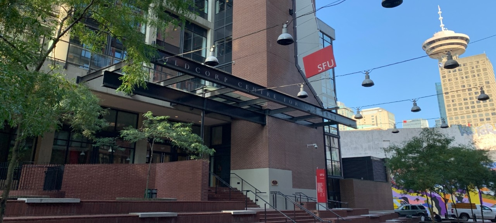
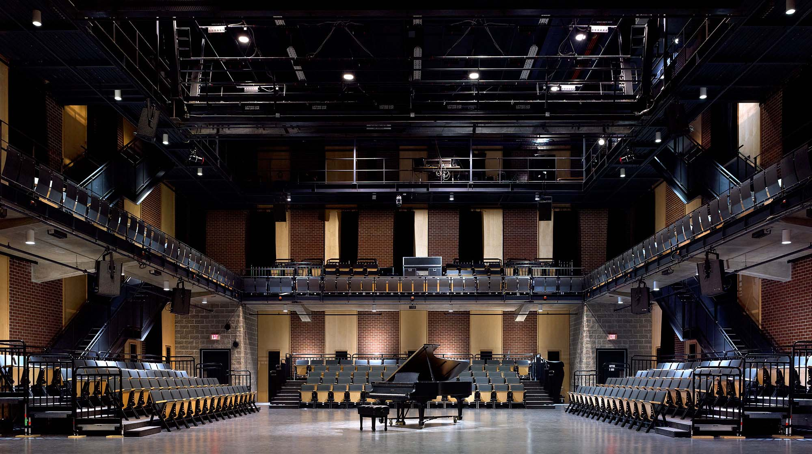
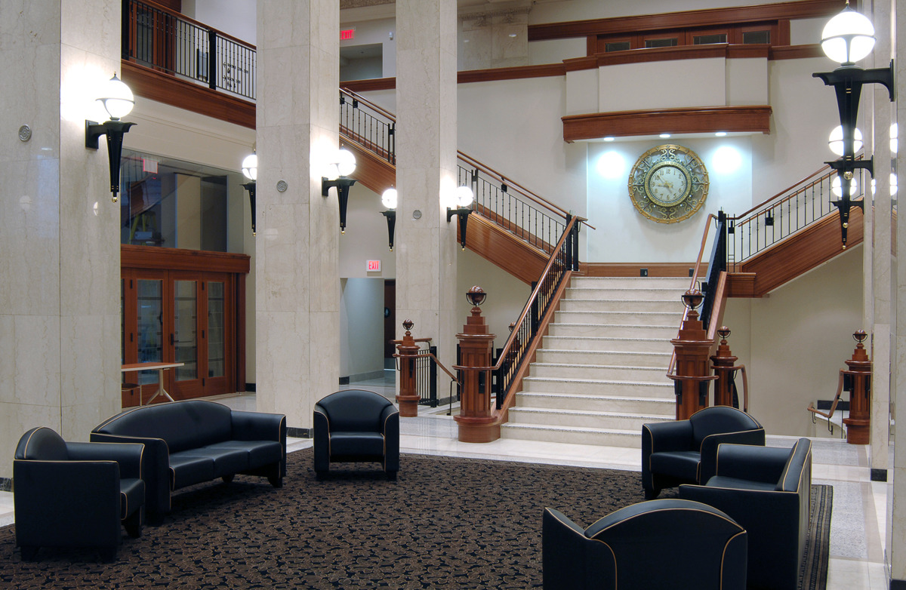
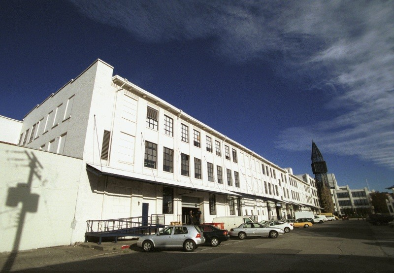
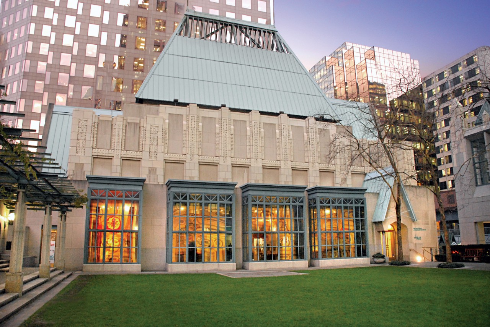

1892
Goldcord Centre for the Arts



1916
Segal Graduate School of Business


1926
611 Alexander Visual Art Studios
1953
312 Main Street
1989
Harbour Centre
2000
Morris J. Wosk Centre for Dialogue
2011
The Bill Reid Centre for Northwest Coast Art Studies
SFU VentureLabs